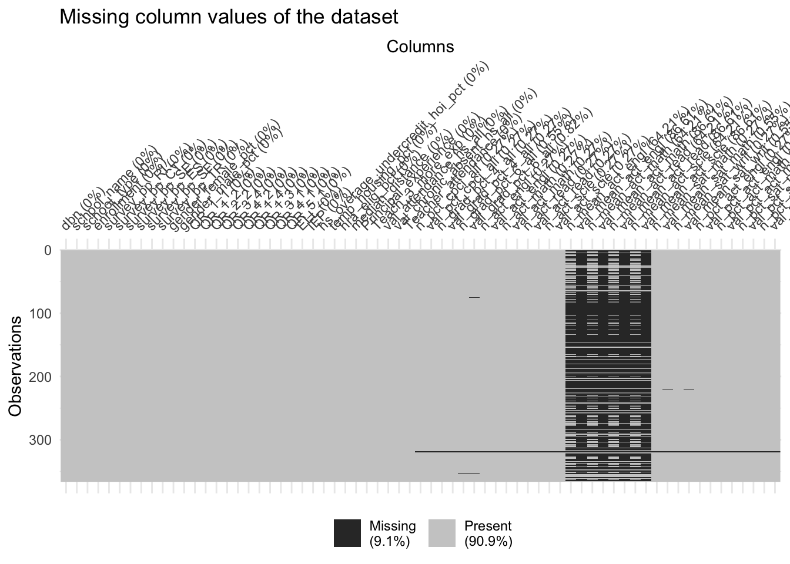

Chapter 4 Missing values
There are four dataset used in our project, but only one of them, dataset 1, exist missing value. Some variable shows “No Data”. In this part, we will focus on them. Since we are interested in the fairness of the quality of High School education in NYC and there are 391 columns in the dataset which shows most of the details of the each school, we will only analyze a part of them that we might used later.
4.0.0.1 4.1 By Row
We first consider the missing value by row.
From the graph above, we could find that over 60% of rows have 4 columns missing, nearly 25% of rows have 8 columns missing. There exist few rows with nearly half of the missing value. Only 12.5% of rows are complete cases.
4.0.0.2 4.2 By column
Then, We analyze the missing value by column.

From the missing patterns above, there are 4 columns(about val_mean of act score) with nearly 90% of missing value, and another 4 columns(about n_mean of act score) have around 65% of missing value. And we could also find that it seems like if “n_mean of act score” variables are missing, then “val_mean of act score” will be missing.
4.0.1 4.3 By value
In this part, we try to find whether the value of some variable will help us predict missing in other columns.
It seems like there is a relationship between ACT scores and districts. Staten Island has less missing value, than other 4 districts. And the higher mean score is, the more missing value will be.
To sum up, ACT score variables contain most of the missing value and missing value of other variables will not influence the analysis of our problem. Then we will use other exam grades to analyze the varying of High School education.